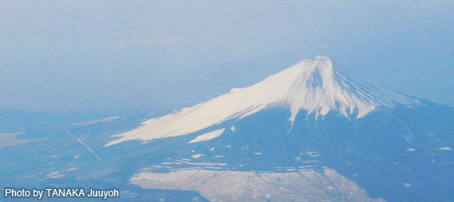
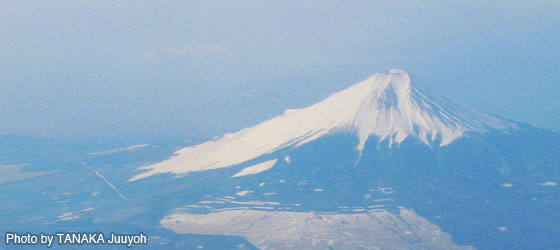

CakeMatsuriTokyo2009
世界中で人気を集めているCakePHP、そのユーザが集まる“祭り”を10月30日から10月31日に東京で開催いたします。各国からコア開発者に来日頂き、セッションやワークショップなどで発表を行なっていただきます。通訳もご用意致しますので、コトバが不安という方も大丈夫。お気軽にご参加ください！
当日券はまだ受付中！
前売りチケットの発売は終了しました。参加希望の方は当日受付にて支払いの当日券を受け付けます。
先着順でお受けしますのでご希望の方は下記の要綱に従って info [あっと] matsuri.cakephp.jp までメールにてご連絡ください。
ワークショップ 入門コースのみ 定員4名 10,500円
カンファレンス ランチ・懇親会無し 定員30名 3,000円
ご希望の当日券の種類、お名前（ふりがな）、連絡先メールアドレスをお書き添えの上でメールにてご連絡ください。
ワークショップ日のチケットは定員に達した為、発売を終了しました。。カンファレンス日のチケットはまだ余裕があります。こちらかどうぞこちら
参加登録、Paypal決済方法の説明はこちら
リレーブログ更新中！
CakeMatsuriの開催を控えCakePHPユーザによるリレーブログを更新中です。
詳細はcakephp.jpフォーラムにて
イベントについて
-
ワークショップ (10月30日) 熟練のCakePHPユーザはどのようにCakePHPを使いこなしているのでしょうか？ワークショップではベテランユーザのガイドに沿って実際の開発に役立つノウハウを習得できます。各セッションはレベルや言語に応じていくつかのグループに分かれる形で行います。参加者の方は各自ノートパソコンをご用意ください。
-
カンファレンス (10月31日) カンファレンスではCakePHPのコアデベロッパーやパワーユーザーによる技術セッションを行います。 CakePHPに関する最新の動向やケーススタディについてなどのさまざまなトピックについて講演の応募もお待ちしています。 各セッションは逐次通訳にて日本語と英語で進行します。 セッション終了後は会場内にて懇親会を行います。（参加費用はチケットに含まれます）
チケット情報
| 対象 | 価格(日本円) |
|---|---|
| CakeMatsuri ワークショップ (10月30日) | 10,500円 |
| ワークショップのみの参加チケットです。日本語、英語のどちらかのセッションに参加できます。 | |
| CakeMatsuri カンファレンス (10月31日) | 8,925円 |
|
カンファレンスのみの参加チケットです。セッションは逐次通訳で日本語、英語で行います。 チケットには1,000円相当の昼食、5,250円相当のパーティの費用も含まれます。 |
|
| CakeMatsuri ワークショップ＋カンファレンス (10月30日～31日) | 19,425円 |
|
ワークショップとカンファレンス両方に参加するチケットです。 チケットにはカンファレンス日の1,000円相当の昼食、5,250円相当のパーティの費用も含まれています。 |
|
Lighting Talk
ライトニングトーク申し込みは終了しました。